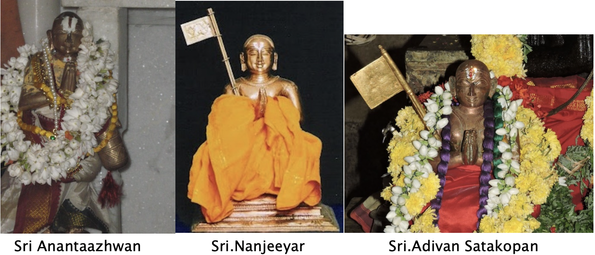

Karnataka boasts of several Abhimaana Sthalas-- magnificent abodes of the Lord consecrated with love and devotion by maharshis and monarchs and patronized by our Acharyas for several generations. It is a land of unalloyed devotion and unadulterated veneration, which has provided a willing refuge for successive Sri Vaishnava Acharyas facing persecution in their Tamil homeland. Be it Sri Ramanuja or Swami Desikan, it is to Karnataka Desam that they repaired, when they encountered hostility in Srirangam. And to the further credit of Karnataka, it has given birth to several Acharyas held in high esteem like Sri Anantaazhwan (b.1053 AD, Kiranganur, Srirangapatna), Sri Nanjeeyar (b.1113 AD, Melkote), Sri Adivan Satakopa Swami (b.1379 AD, Melkote) and others.

Likewise Swami Desikan, like his guru Bhagawat Ramanuja, chose Karnataka as his second home. While Ramanuja spent considerable time at Thirunarayanapuram in Mandya district, any narration of Swami Desikan’s life and times would be woefully incomplete without a mention of Sathyagala, a village in the Kollegal taluk of Chamarajanagar District of Karnataka, for its close association with this Acharya. It would be no exaggeration to say that apart from Srirangam, Kanchi, and perhaps Tiruvaheendrapuram, Sathyagala is the only kshetram where Swami Desikan spent between 12 and 40 years of his extremely productive spiritual life. And according to most versions of his history, Swami Desikan dwelt here for two fairly long spells, making Sathyagala a definite place of pilgrimage for Desika bhaktas.
It is only in the fitness of things that Sri Ahobila Mutt is closely linked to the state of Karnataka. The history of the Mutt traces more than six centuries into Vijayanagar period in the 14th Century. The young Srinivasacharya, son of Kidambi Kesavacharya, was born on 18th August 1379 AD at Thirunarayanapuram (Melkote) near Mysore in Mandya District of Karnataka. Swami Kesavacharya comes from an illustrious family with orthodox views and with high literary and cultural attainments. With remarkable display of mental, reasoning and perceptive abilities, father Kesavacharya decided to send his son to Kancheepuram near Chennai, Tamil Nadu, a well-known seat of learning like Kashi, to study in the famous Ghatikasatham Ammal school. The founder Swami Ghatikasatham Ammal or Chinna Ammal is the grandson of illustrious Vaathsyavaradan or more popularly known as Nadadoor Ammal (1165-1275 AD) and who is the guru of Swami Vedanta Desika. The Ghatikasatham Ammal swami was so known because of his extraordinary creative skills where he could pen 100 slokas in a Ghatika’s time (1 Ghatika is 24 minutes). Also Chinna Ammal was the foremost disciple of Sri Brahma thanthra swathantra Swamy who established Parakala Mutt. No wonder Kesavacharya Swami decided to put his son there so as to make him a brilliant scholar. Young Srinivasacharya learnt Sribhashya, Bhagavad Vishaya and Geeta Bhashya at the feet of Chinna ammal. When he was hardly twenty years of age in 1398 AD, Srinivasacharya wakes up in an excited mood. The dream he witnessed a little while ago is the cause of it. Lord Lakshminarasimha of Ahobilam appeared before him, commanding him to come to Ahobilam, don the robe of a sanyasi and be instructed in his future mission of life from there. Could this vision be true, he kept asking himself again and again. He of course knew Ahobilam located in the present Kurnool District of Andhra Pradesh. To pilgrimage there is not an unusual occurrence in those days. But that God should have chosen him of all people, left him amazed. He went about his morning ablutions as usual but in the same ecstatic mind. Taking permission from his parents, he then hurried to his Guru Ghatikasathakam Ammal and told him of his vision. The old Master told his disciple Srinivasacharya to obey the mandate without any delay. Blessed by his guru he wended his way to Ahobilam. Meanwhile Mukundaraya, the local chieftain there also reached the place to receive him on divine command. According to Ahobila Kaifiyat (the Urdu word for narrative), the Lord Narasimha also appeared in the dream of King Prataparudra of Kakatiya dynasty (who later became a Vaishnava) to renovate the Ahobilam temple and let one Srinivasacharya to lay down the daily puja rituals etc. Having arrived there, the boy Srinivasacharya climbed the hill amidst dense forest (which Thirumangai Azhvar describes as one which none can reach except Devas), had a dip in the river Bhavanasini, took up abode in that wilderness and started meditating. Lord Narasimha appeared before Srinivasacharya in the form of a sanyasi, initiated him with the "Preshamantram", offered him tridanda, gave him 'Sanyasa Asrama', named him 'Satakopa Jeeyar', commanded him to go door to door to preach the message of Vaishnavism as expounded by Azhwars, Ramanuja & Vedanta Desika, and instruct them in the Ashtaksharam, Dwayam and Charama Slokam. Thus was born Sri Ahobila Muth more than 600 years ago and its First Jeeyar Srimath Adivan Sathakopa Yatindra Maha Desikan who is the spiritual and titular head of this muth. This episode is sculpted on one of the pillars of the Ranga Mantapam in Lower Ahobilam.
The Jeeyar though anxious to start on his mission right earnestly, could not decide on the 'Utsava' Moorthi he could take with him as instructed to him by the Lord. He, therefore, went into meditation and prayed that the most suitable Moorthi' should come and bless him. Legend has it that immediately the 'Utsava Moorthi' of Malola Narasimha came flying from the temple and seated Himself on the outstretched palms of the Jeeyar.
A look at the 'Malola' Moorthi will reveal that He wears a Paduka indicating that He is ready to proceed on tour. Mukundaraya, who watched this miracle, became his disciple and offered not only arrangements for permanent daily worship but also gave a palanquin and other paraphernalia to assist the Jeeyar in his sanchara (tour) along with the 'Malola' Moorthi. He also gave control of all the temples to this Jeeyar and thenceforth Ahobila Kshetram came under the direct control of Ahobila Muth whose pontiffs are even today the hereditary trustees. Thus both the Jeeyar and his God fully equipped, commenced their historic travel giving spiritual and material succor to all who prayed in the course of their travel from Sethu (southern tip) to Himachalam (northern tip) of this country propagating Lord Lakshminarasimha cult.
Since then several Vijayanagar Kings like Devaraya I, Devaraya II, Proudha Devaraya patronized the Ahobila Muth. It is said that later during his sancharam in 1400 AD on a divine command to Azhwar Thirunagari, the abode of Nammazhwar in present day Thoothukudi District of Tamil Nadu, another miracle unfolded. The Jeer found to his dismay that the idol of Nammazhwar was missing and a Siva temple standing in its place. Also the name of the place was changed as Ekaadasa rudra Kshetram. The Jeer searched for the missing vigraham in and around the Thamraparni river. Not finding he prayed to his Lord. Answering his prayers Nammazhwar appeared before him and said his idol lay under the riverbed. The Jeer with the help of a Pandyan King unearthed the idol, restored it to the temple and changed the name of the place to Azhwar Thirunagari again. Pleased with the Jeer’s devotion Nammazhwar conferred on him the title Van (powerful) Sathakopan (Nammazhwar’s own name), added the epithet Adi (First) and gave as a paritosika (gift) the Hamsamudra which remains even to this day the official seal of the Ahobila Muth. The carvings on the wall of the Ahobilam temples actually display this Hamsamudra, or swan emblem of the Ahobila Math.
This first pontiff of Sri Ahobila Mutt built a temple for Sri Vedanta Desika and gave a number of discourses. It is said that during one of his discourses the audience included a cobra that listened with rapt attention. It was believed that Bhagavat Ramanuja had himself come in the form of a snake. The Jeer shed his mortal frame to attain paramapatham in April 1458 at his place of birth Thirunarayanapuram (Melkote) after sixty years of divine service to the Lord and the Mutt in his sanyasa asrama. The great tradition of taking Malola Idol to the houses of Devotees across the country and spreading Sri Vaishnavism is faithfully and diligently followed to this day by successive Jeeyars who are also called Azhagiyasingars. The first Jeer conferred the title “Sashti Prabhanda Nirmatha” on the second Jeer Sriman Narayana Yateendra Mahadesika (1458-1473) for his scholarship. The latter installed the idol of Sri Adivan Satakopa Jeer at his brindavana in Melkote. It is said that disciples of Sri Adivan Satagopan established many Mutts at different places in North India, prominent among them were the Mutts at Varanasi , Chitrakoot and Pushkar. Ghanshyamacharya, of this spiritual lineage, established a Mutt in Rajasthan which is now famous as the Jhalariya Mutt. Its branches have spread over to the neighbouring regions of Gujarat and Maharashtra. Sri Swami Balmukundacharyaji was a distinguished scholar and renowned Acharya of this Mutt.
Sri Adivatan Satagopa Jeer’s main disciple Swami Narasimhacharya established a temple of Dwarakadhish in Varanasi on the spot where Lord Krishna slew the tyrannical ruler of Poundradesh with His Sudarshanchakra. In Vrindavan , the Jankivallabh Mandir of Keshighat is a prominent Vadakalai Sri Vaishnava monastic institution and is associated with the spiritual lineage of the Ahobila Mutt. The present Azhagiya Singar has visited this well-known institution in the past as well as recently. It is presently headed by Swami Sri Aniruddhacharyaji Maharaj.
Ahobilam Mutt has three Guru Paramparas - a Samashrayana Parampara, a Kalakshepa Parampara, and a Sanyasa Parampara. That's because for its founder Sri Adivan Sadagopan, one guru who gave him Samashrayanam (initiation into Panchasamskara), one guru who gave him Kalakshepam (knowledge), and one guru (Lord Narasimha) who gave him Sanyasa. Sri Ahobila Mutt’s Acharya Guru Parampara/ Percepter Lineage is as below: